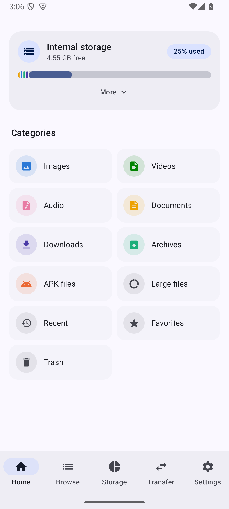
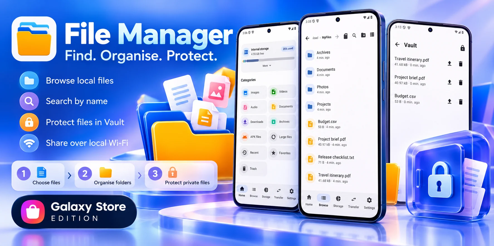

Everyday file tools
Browse folders and copy, move, rename or share files. Choose a list or grid to see them your way.
Find that document. Tidy your folders. Keep private files protected. Everyday tools for the files on your Android device.
Galaxy Store release in progress. The store listing opens when published; availability may vary by region.

A practical toolkit
The tools you need to manage your files, with a clear view of what is happening.
Browse folders and copy, move, rename or share files. Choose a list or grid to see them your way.
Search by name and filter by file type. Keep useful locations in Favorites and return to recent files.
See a breakdown by file type and find duplicate files with exactly the same content.
Keep project files together. Create and extract ZIP archives on supported local storage.
Protect selected files with a passphrase. Lock the Vault when you finish; keep your passphrase safe.
Share a folder over local Wi-Fi using a PIN. Use a trusted network: this connection is not encrypted.
Restore supported locally deleted items before permanent removal. Selected Android folders have different capabilities.
Choose light or dark mode, colour themes and file icon styles. A built-in language picker helps you feel at home.
Start with your files
No File Manager account to create. Give the app access to the files you want to manage, then get on with your day.
Select a supported folder with Android’s picker, or review the broader file access permission when you need to manage your local storage.
Open a category, browse a folder or search by name. Select files to copy, move, rename, share or place in a ZIP archive.
Move chosen files into the encrypted Vault. Or turn on local Wi-Fi sharing, open the shown address in a browser and enter the PIN. Stop sharing when you finish.
Take a closer look
Explore eight feature walkthroughs. Tap any image to open it at full size.

Illustrated feature previews based on the app. Sample files are used for demonstration.
Good to know
File tools work with your device’s local storage and the folders you grant access to. File names, paths, search terms and Vault contents are not advertising parameters. Sharing or Wi-Fi transfer happens when you choose it. See the Privacy Policy for details about app services and hosting.
No. There is no passphrase recovery service. Keep the passphrase safe and back up important files before moving them into the Vault. Removing the app can remove its private Vault and Trash data.
No. The connection uses local HTTP and a PIN. Use a trusted Wi-Fi network, share only the intended folder, and stop the server after use. Interrupted transfers do not resume automatically.
ZIP and recoverable Trash currently work with supported local storage. Folders selected through Android may have different capabilities; deletion there may be permanent. Always read the action and confirmation before deleting files.
Advertising and purchasing are disabled in the current release configuration, and unregistered Pro offers are hidden. Basic local file management does not require a subscription. Any later optional offer must be presented clearly before purchase.
A built-in language picker is available. The store description’s language may differ from the interface. Some screens and policies may appear in English, and feature availability can depend on your device and permissions.